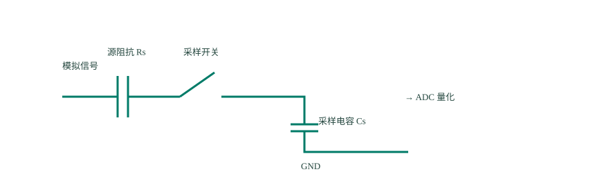

ADC：把电压变成程序能读的数
前面的传感器已经把测量结果放进寄存器，STM32 通过总线取数。电池和模拟麦克风提供的却是电压：程序怎样知道电压是多少，又怎样记录它随时间的变化？
第 1 节 · GPIO 能读高低，为什么还需要 ADC？
把一个变化的电压送到普通数字输入，程序通常只能得到 0 或 1：输入电路把电压按高、低阈值判断。这个结果无法区分 1.0 V、1.1 V、1.2 V，也无法描述一段声音波形。我们希望得到一个整数，用它表示这次测到的电压大小。
ADC 是模数转换器，英文为 Analog-to-Digital Converter。“模拟”在这里指电压可以在一个范围内连续变化；“数字”指结果用有限个整数表示。STM32 内部有这样的转换电路，程序配置它，再读取它的转换结果。
先确定什么时候测，再确定记成几
对一条随时间变化的电压曲线，先选定一些时刻，每个时刻测一次，叫采样。比如每隔 1 毫秒测一次，一秒测 1000 次，采样率就是每秒 1000 次。采样得到的是这些时刻的电压，两个采样时刻之间的变化没有被完整记录。
程序不能用无限精细的数保存电压，于是再把可测范围分成有限的档位，给每个档位编号，把电压记成对应整数，叫量化。例如两个很接近的电压可能落在同一档，得到同一个整数；只看这个整数，就无法再区分它们。
把上图每次采到的电压保持到下一次采样，画出来就会成为一段段水平线：这一段采用同一个值，下一次采样得到新值，再更新到新的高度。用这样的画法，就能看清采样时刻之间没有记录到的变化：
因此，采样率决定时间上取多密，分辨率决定电压上分多细。提高其中一个，不能自动补上另一个缺失的信息。接下来先把“这些档位怎样划分”弄清楚。
第 2 节 · 参考电压决定尺子的范围，分辨率决定分几档
为了方便计算，先假设一个教学用转换器测量 0～4 V，分辨率为 3 位。3 个二进制位有 2³＝8 种组合，所以它只能给出 0～7 八个编号。把 4 V 分成八份，每档宽 0.5 V。（这里的 4 V 只用于说明档位，不是给 STM32 引脚规定允许输入电压。）
| 输入所在的区间 | 结果编号 | 三位二进制 |
|---|---|---|
| 0 V ≤ 输入 < 0.5 V | 0 | 000 |
| 0.5 V ≤ 输入 < 1.0 V | 1 | 001 |
| 2.5 V ≤ 输入 < 3.0 V | 5 | 101 |
| 3.5 V ≤ 输入 < 4.0 V | 7 | 111 |
在这个按等宽区间编号的简化模型里，输入 2.7 V，结果是 5；输入 2.8 V，也还是 5。丢掉的这部分细节就是量化带来的误差。真实转换器的档位转换边界还需要按手册解释，这张表先帮助理解“有限整数不能精确区分所有电压”。
项目中的 12 位是什么意思？
仓库将 ADC1 配成 12 位，单次未叠加处理的结果有 2¹²＝4096 档，编号为 0～4095。4096 是档位数量，4095 是最大编号。若参考范围为 0～3.3 V，理想每档约宽 3.3÷4096＝0.000806 V，也就是约 0.806 毫伏。
参考电压是转换器判断输入大小时使用的电压尺度。这里用 3.3 V 作名义计算；若实际参考电压与它不同，同一个输入电压对应的读数也会改变。增加位数会缩小理想档宽，但参考电压波动、输入噪声和转换电路本身的误差仍然存在。
读取结果后，入门时常用电压 ≈ 读数×参考电压÷4095反算 12 位电压。理想档宽则用参考电压÷4096 表示。前一个是便于把两个端点对应起来的换算近似，后一个是在算有多少份；本篇代码使用前一种近似。
第 3 节 · 转换器内部怎样知道电压是多少？
先把当前电压暂时保持住
输入可能一直变化，但判断一个结果需要时间。可以先把内部电路理解为一个开关和一个小电容：开关闭合时，输入通过电路给电容充电，电容电压逐渐接近输入；开关断开后，电容暂时保持这次电压，供后面的转换使用。

电压变化并不是瞬间完成的。如果信号经过较大的电阻才能给电容充电，留的采样时间太短，电容还没接近输入就开始判断，结果会有偏差。所以 CubeMX 的 Sampling Time 要结合信号源来设置；它并不是“每隔多久采一次”的另一个名字。
再从最高位开始，一位一位比较
这类逐次逼近转换器内部有一个比较器，用于判断保持的输入电压比试探电压高还是低；还有一个把数字变成试探电压的电路，即内部的数模转换器。控制电路先试最高位，再试下一位，逐步缩小范围。
仍用前面的 3 位、0～4 V 模型，保持的输入为 2.7 V。每个编号对应的试探电压按 0.5 V 间隔计算，过程如下：
| 这一步试什么 | 试探电压 | 与 2.7 V 比较 | 保留的结果 |
|---|---|---|---|
| 先试最高位：100，即 4 | 2.0 V | 输入更高 | 最高位保留 1 |
| 再试中间位：110，即 6 | 3.0 V | 输入更低 | 中间位改回 0 |
| 最后试最低位：101，即 5 | 2.5 V | 输入更高 | 最低位保留 1 |
三位都判断完，得到 101，即整数 5。输入仍然是 2.7 V，数字结果只说明它落在本例的第 5 档。12 位转换按同样的思路确定更多位，具体转换周期查芯片手册。
一次结果需要“采样并保持”的时间，加上“比较并确定数字”的时间。ADC 的工作时钟决定这些内部步骤走多快；采样率则表示每秒最终取得多少个样本。开启多次累加等功能后，产生一个输出还可能需要进行多次内部转换。
连续测声音时，还要考虑输入中变化最快的成分。如果采样过稀，不同的快慢波形可能在采样点上留下相同数值，叫混叠。理想带限信号需要采样率高于最高频率的两倍；实际系统还需要在采样前限制过高频率，给滤波留出余量。采完以后再平均，无法找回已经混淆的信息。
第 4 节 · 把原理对应到配置，再读一次电压
先在独立的单次转换实验工程中配置 ADC1。可以从安全范围内的已知电压开始：信号与开发板共地，引脚设为模拟输入、不启用上下拉，选择对应通道。通道编号是 ADC 内部输入编号，不一定等于引脚编号；例如本项目 PA1 对应 ADC1_IN6。
- 选择 12 位分辨率。结果按 0～4095 理解。
- 选择单通道、单次转换、软件启动。这次先由程序发起一次测量，关闭连续转换与硬件过采样。
- 设置采样时间。按输入电路和手册允许范围选择，给采样电容充分建立的时间。
- 初始化并校准。初始化配置电路；校准补偿转换器内部的一部分偏差。项目在初始化后、启动采集前调用
HAL_ADCEx_Calibration_Start(&hadc1, ADC_CALIB_OFFSET, ADC_SINGLE_ENDED)，返回 HAL_OK 才继续。
四个函数，分别对应哪一步？
| 函数 | 作用和参数 | 返回什么 |
|---|---|---|
HAL_ADC_Start(&hadc1) | 启动这个 ADC 的常规组转换 | HAL_OK 表示启动成功 |
HAL_ADC_PollForConversion(&hadc1, 10) | 等待转换完成；10 是等待上限，单位毫秒 | HAL_OK 表示已完成，超时或出错时不能使用新结果 |
HAL_ADC_GetValue(&hadc1) | 取出转换寄存器里的整数 | 整数读数；它不会自己启动或等待转换 |
HAL_ADC_Stop(&hadc1) | 停止本次常规组转换 | HAL_OK 表示停止成功 |
单次转换实验 · 已包含 adc.h，完成上述初始化和校准
if (HAL_ADC_Start(&hadc1) == HAL_OK) {
if (HAL_ADC_PollForConversion(&hadc1, 10) == HAL_OK) {
uint32_t raw = HAL_ADC_GetValue(&hadc1);
float voltage = raw * 3.3f / 4095.0f;
/* 在这里观察 raw、voltage，或用已学过的串口发送。 */
}
HAL_ADC_Stop(&hadc1);
}比如读数接近 2048，按名义参考 3.3 V 换算约为 1.65 V。先检查接地时读数是否接近零，再观察一个已知电压。只有等待成功的分支里才取结果，避免把等待失败当成测到了零伏。
当前手表 ADC1 已配为麦克风的连续转换。上面是单独实验的配置和代码；在项目里测电池，应该沿用下一节的注入通道接口，让声音采集继续运行。
第 5 节 · 用它测电池，再记录不断变化的声音
电池电压为什么要先分压？
电池满电时可能高于 ADC 的参考范围，不能直接用前面的比例式处理。板上用两个 100 kΩ 电阻串联分压，ADC 读取中点电压。两个电阻相等，中点约为电池电压的一半；因此读到 2.0 V 时，估计电池约为 4.0 V。
本项目中，PA2 对应 ADC1_IN7，PA4 控制分压支路是否接通。沿 battery.c 看 battery_read_mv()：接通支路 → 等待电压稳定 → 启动转换并等完成 → 读取整数 → 关闭支路 → 按分压比例换算毫伏。较大的分压电阻使输入建立更慢，所以代码为这个通道选了较长采样时间。
和麦克风共用 ADC1，怎样分别读取？
ADC1 有常规转换组和注入转换组，两组可以各自配置通道与转换序列。仓库用常规组持续采麦克风，电池使用注入组，在需要时请求一次电压测量。两组仍共用同一转换器；注入转换可以插入常规转换过程，所以它也会占用转换时间。
battery_init() 无参数，配置分压控制脚和注入通道，应在 MX_ADC1_Init() 之后、麦克风启动之前执行一次。battery_read_mv() 无参数，接通支路并完成一次读取，返回以毫伏表示的电池电压；当前实现用 0 表示读取失败。它在内部使用 HAL_ADCEx_InjectedStart()、HAL_ADCEx_InjectedPollForConversion()、HAL_ADCEx_InjectedGetValue() 和 HAL_ADCEx_InjectedStop()，依次对应启动、等待、取值和停止注入转换。
/* 包含 battery.h；MX_ADC1_Init() 之后、麦克风启动之前执行一次。 */
battery_init();
/* 后续需要读电池时调用。 */
uint16_t battery_mv = battery_read_mv();
if (battery_mv != 0) {
/* battery_mv 是电池电压，单位毫伏。 */
}电阻、参考电压和测量本身都有误差，这个读数是估计值。源码还提供电量百分比换算，但它采用指定电压区间的粗略线性映射；先把电压测准，再讨论电量估算。
电池变化慢，按需测一次即可。麦克风电压一直随声音变化，需要连续保存很多样本。接着到 项目麦克风：从模拟电压到声音数据，完成接线、连续采集、缓冲和声音强弱判断。
接下来 · 把采集到的数据发出去
学完本篇和下拉目录中的项目麦克风，按钮、屏幕、串口、传感器、电池与声音采集这些主要外设入口就能串起来了。接下来可以把重点转向：怎样把这些数据发到手机，手机又怎样向手表发送指令？
先读无线通信：把串口消息送到手机，接通 STM32、无线芯片与手机之间的链路；再读手写应用协议：从字节流得到可靠消息，规定数据怎样打包、识别和校验。
无线通信的下拉子篇会接着讲手写协议和项目实现，再进入 DMA，完成项目所需的数据搬运知识。时钟与定时器放在后面的嵌入式拓展中。当前项目用 TIM6 提供 HAL 的毫秒计时，支持延时和超时判断；传感器由水位中断通知取数，麦克风采用 ADC 连续转换。因此，继续无线通信之前，不需要先完成脉宽调制、输入捕获等定时器实验。
扩展 · 数字怎样变回电压？
前面逐次比较时，内部用数字产生试探电压。独立的 DAC，即数模转换器，也提供数字到模拟电压的方向：程序写入一个编号，输出电路产生对应电压。它可以用来生成变化的模拟信号，输出范围、负载和建立时间要按手册确认。
手表当前没有使用独立 DAC 输出，本篇先完成 ADC 采集。需要波形输出时，可以进一步学习 定时器与脉宽调制，比较直接数模输出和脉宽调制经过滤波后的电压。
资料与源码
- ST RM0456：ADC1 的转换原理、常规组、注入组及采样时间。
- ST AN2834：内部结构、参考电压与信号源误差。
- 项目 adc.c、battery.c；ST ADC HAL 实现用于核对函数行为。